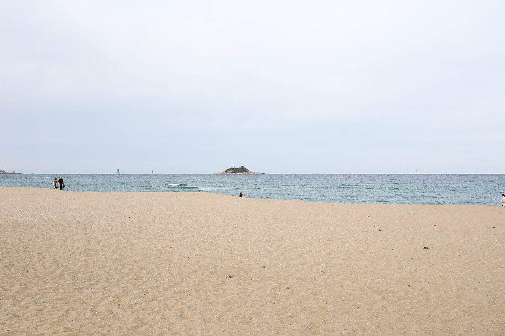
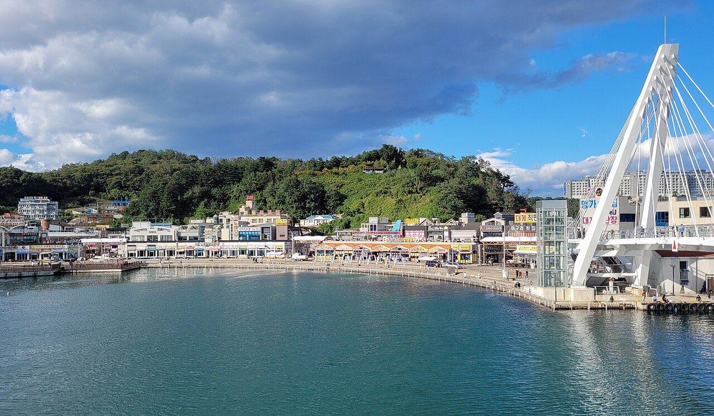
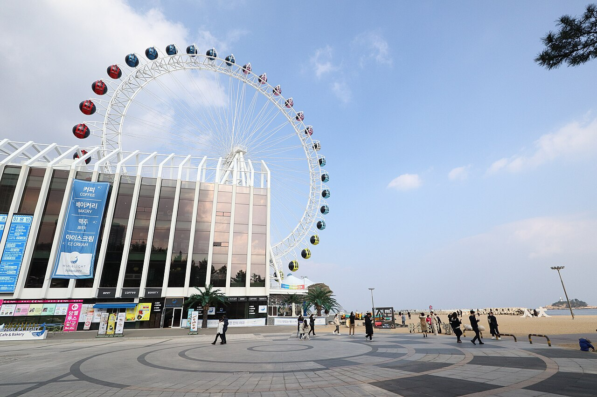
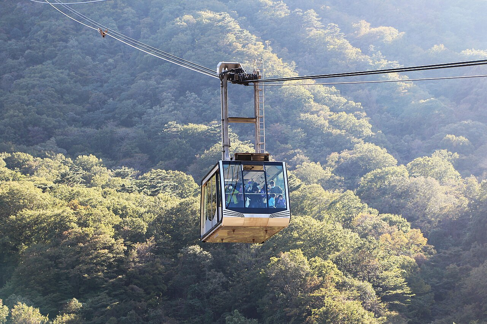
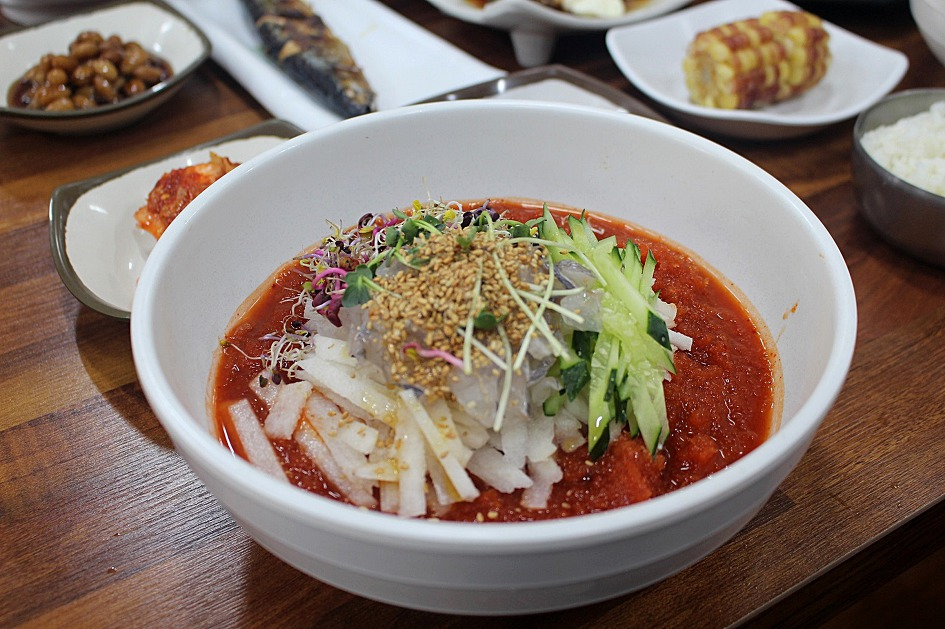

LECTURE · FAMILY TRIP
비 오는 속초,
리조트에서 노는 법
11월 14일(토)부터 16일(월)까지 2박 3일. 날씨를 먼저 읽고, 그 날씨에 맞춰 일정을 짰습니다. 이 페이지는 가족에게 소리 내어 설명하면서 넘겨 보도록 강의 순서로 구성했습니다.

DAY 1 · 11/14
토요일
이동 · 입실
오후 출발, 물회 저녁
DAY 2 · 11/15
일요일
리조트 · 시장
시설 중심, 닭강정
DAY 3 · 11/16
월요일
퇴실 · 귀가
점심 후 출발
1
날씨 읽기: 3일 내내 비가 옵니다
이 강의의 목표. 예보를 보고 “어디서 놀지”를 먼저 정하는 것. 야외 일정은 비가 그칠 때 끼워 넣고, 기본은 리조트 안에서 해결합니다.
| 날짜 | 하늘 | 기온 | 강수확률 | 최대 풍속 |
|---|---|---|---|---|
| 토 11/14 | 이슬비 | 8.7 ~ 14.3°C | 70% | 10km/h |
| 일 11/15 | 이슬비 | 10.9 ~ 15.8°C | 69% | 16km/h |
| 월 11/16 | 소나기 | 9.1 ~ 12.3°C | 100% | 24km/h |
설명 포인트
- 토·일은 이슬비라서 우산이나 방수 재킷이 있으면 짧은 산책은 가능합니다.
- 월요일은 비도 세고 바람도 강합니다. 야외 활동은 접고 이동에 집중합니다.
- 기온이 낮지 않아도 바닷바람 때문에 체감이 더 춥습니다. 겉옷과 여벌 양말을 챙깁니다.
딸에게 물어보기비가 오면 보통 여행을 망쳤다고 하죠. 그런데 리조트 여행은 비 오는 날이 더 편할 수 있어요. 왜 그럴까요?
출처: Open-Meteo 예보, 2026-11-09 조회. 예보는 여행 날짜가 다가오면 바뀝니다. 출발 전날 다시 확인하세요.
2
토요일: 이동하고, 입실하고, 물회로 마무리
목표. 무리하지 않고 안전하게 도착하기. 첫날은 이동이 본 게임이라서 일정은 가볍게 잡습니다.
| 시각 | 일정 | 메모 |
|---|---|---|
| 13:00 | 신도림 출발 | 신도림역에서 리조트까지 약 200km이고, 경로 계산상 막히지 않으면 약 2시간 45분입니다. 토요일 오후 정체를 감안해 3시간 반까지 보세요. |
| 휴게소 | 한 번 쉬기 | 비 오는 날 고속도로는 졸음 위험이 큽니다. 운전자를 교대하거나 중간에 꼭 쉽니다. |
| 16:30~17:00 | 롯데리조트 도착, 체크인 | 주소는 속초시 대포항길 186입니다. 입실 시간은 예약 확인서를 보세요. |
| 18:00 | 물회 저녁필수 | 청초수물회(속초시 엑스포로 12-36)가 지도 데이터에서 확인됩니다. 도착 전에 전화로 영업 여부를 확인하세요. |
| 20:00 | 리조트 시설 가볍게 체험 | 첫날 저녁에는 내일 일정의 예고편만 봅니다. 시설 운영 시간을 직접 확인하는 시간입니다. |
주의. 식당의 영업 시간과 휴무일은 확인하지 못했습니다. 출발 전에 전화나 지도 앱으로 확인해 주세요.

딸에게 설명하기오늘의 임무는 딱 하나, 무사히 도착해서 물회를 먹는 거예요. 내일이 진짜 하루짜리 놀이 일정입니다.
3
일요일: 리조트를 제대로 쓰는 하루
목표. 비 오는 날 리조트의 장점을 최대한 쓰기. 시설 이용을 중심에 두고, 시장과 닭강정은 비가 약한 시간에 끼웁니다.
| 시각 | 일정 | 메모 |
|---|---|---|
| 08:30 | 조식 | 조식 운영 시간은 숙박 상품에 따라 달라집니다. 포함 여부를 확인하세요. |
| 10:00 | 리조트 시설 1부 | 오전에는 사람이 적은 시설부터 갑니다. 수영장·스파 같은 물 시설이 있으면 오전이 한산합니다. |
| 12:30 | 점심 + 닭강정필수 | 리조트에서 속초관광수산시장까지는 차로 약 5km, 9분입니다. 속초관광수산시장은 영문 간판에 Sokcho Central Market이라고 적혀 있고 흔히 중앙시장이라고도 부릅니다. |
| 15:00 | 해변 산책 (비가 약할 때) | 우산 쓰고 20~30분이면 충분합니다. 해가 지기 전, 오후 5시 안팎이 마감선입니다. |
| 16:00 | 리조트 시설 2부 | 산책으로 식은 몸은 스파나 온수 시설로 풉니다. |
| 18:30 | 저녁 | 시장 먹거리(오징어순대 등) 또는 리조트 주변 식당. |
| 20:30 | 가족 시간 | 숙소에서 쉬거나 시설이 열려 있으면 한 번 더. |
리조트 시설, 이렇게 고르세요
확인된 사실: 위키백과(롯데호텔 문서)에 따르면 롯데리조트 속초는 2017년에 문을 연 9층, 392실 규모의 리조트이고 실내 워터파크를 갖추고 있습니다. 이 일정의 중심 시설은 워터파크입니다. 반면 공식 사이트는 동적 페이지라서 운영 시간과 요금, 휴장일은 읽지 못했습니다. 아래 항목은 예약 전에 확인하고 체크하세요.


딸과 함께 하는 미션
1리조트 안내 데스크에서 지도나 시설 안내서를 받아 오기. 오늘 가고 싶은 시설 3곳에 별표 치기.
2시설 운영 시간표를 보고 “우리 가족의 오늘 일정표”를 직접 짜 보기.
3닭강정 줄에서 기다리는 시간을 재고, 시간 대비 맛 점수를 매겨 보기.
4
월요일: 안전하게 돌아오기
목표. 비와 바람이 가장 센 날이므로 무리한 일정을 넣지 않습니다. 퇴실, 점심, 귀가 세 가지만 합니다.
| 시각 | 일정 | 메모 |
|---|---|---|
| 09:00 | 조식, 짐 싸기 | 젖은 옷과 수건은 비닐봉지에 따로 담습니다. |
| 퇴실 시간 | 체크아웃 | 퇴실 마감은 예약 확인서에서 확인하세요. |
| 11:30 | 점심 | 시장에서 먹고 닭강정을 포장해 가져가도 좋습니다. |
| 13:00 | 속초 출발 | 월요일 오후는 상대적으로 한산하지만 비가 세면 속도를 줄이세요. |
| 17:00 무렵 | 귀가 | 휴게소 한 번 포함한 예상 시간입니다. |
안전. 강풍과 폭우가 겹치면 고속도로 속도를 평소보다 낮추고 차간 거리를 넉넉히 두세요. 피곤하면 출발을 늦춰도 됩니다.
5
먹거리 2종: 물회와 닭강정
물회 필수
- 신선한 회를 새콤달콤한 육수에 말아 먹는 요리입니다.
- 청초수물회: 속초시 조양동 엑스포로 12-36에 있는 것으로 지도 데이터에서 확인됩니다.
- 봉포머구리집: 지도 데이터에서 찾지 못했습니다. 후보로만 두고 전화나 지도 앱으로 먼저 확인하세요.
- 11월은 메뉴가 바뀌는 식당도 있으니 물회 판매 여부는 전화로 확인하세요.

닭강정 필수
- 만석닭강정: 지도 데이터에 속초시 조양동 청초호반로 72 매장이 있습니다. 시장 안 매장이 따로 있는지는 확인하지 못했습니다.
- 줄이 길다고 알려진 가게라서 대기 시간을 감안해 일정에 여유를 두세요. 줄 서는 동안 비를 맞을 수 있으니 우산을 챙기세요.
- 월요일 귀가 길에 한 번 더 사서 집에서 먹는 방법도 있습니다.
딸에게 설명하기같은 닭강정이라도 가게마다 맛이 달라요. 이번 여행에서는 두 곳을 비교해 보고, 가족 평점을 매겨 볼까요?
6
출발 전 확인 목록
목표. 현장에서 당황하지 않도록 지금 확인할 것을 정리합니다.
예약과 운영
짐과 차량
7
계획 수정하기: Hermes에게 시키기
목표. 가족이나 동행이 이 계획을 직접 고치고, 고친 내용을 이 페이지에 반영하는 방법입니다. 코딩을 몰라도 Hermes에게 말로 시키면 됩니다.
준비물
- GitHub 계정과 Git, GitHub CLI(
gh) - Hermes Agent. 설치 명령은 아래와 같습니다.
curl -fsSL https://hermes-agent.nousresearch.com/install.sh | bash
hermes setup # 모델 제공자와 API 키 설정
gh auth login # GitHub 로그인자세한 설치와 설정은 Hermes 공식 문서를 보세요. API 키는 각자의 계정 것을 쓰고, 다른 사람과 공유하지 마세요.
수정하는 순서
- 저장소 복사. 저장소를 내려받습니다. 소유자가 공동 작업자로 초대했다면 바로 쓰고, 아니라면 포크해서 작업합니다.
gh repo clone reiple/sokcho-trip cd sokcho-trip - Hermes 실행. 폴더 안에서 Hermes를 켭니다.
hermes - 말로 요청. 파일은
index.html하나입니다. 예시 요청은 이렇습니다.index.html에서 일요일 점심 메뉴를 물회에서 대게로 바꾸고, 15시 해변 산책을 실내 활동으로 교체해줘.토요일 출발 시각을 14시로 늦추고 도착 예상 시각도 같이 고쳐줘. 고친 뒤 브라우저에서 열어 보이는지 확인해줘. - 결과 확인. Hermes가 고친 내용을 보여 줍니다. 이상하면 “방금 변경을 되돌려줘”라고 말하세요.
- 반영하기. Hermes에게 부탁하거나 직접 입력합니다.
1~2분 뒤 페이지가 갱신됩니다. 포크했다면git add index.html git commit -m "일정 수정" git pushgh pr create로 수정 요청을 보내고, 소유자가 승인하면 반영됩니다.
소유자가 해 줄 일
- 동행이 직접 반영하게 하려면 저장소 Settings → Collaborators에서 상대방을 초대합니다.
- 직접 권한을 주기 부담스러우면 포크와 수정 요청(PR) 방식으로 받아서 승인만 하세요.
주의. 이 저장소는 공개입니다. 수정할 때 주소, 연락처, 예약번호, 결제 정보 같은 개인정보는 페이지에 넣지 마세요. 여행이 끝나면 저장소를 비공개로 바꾸거나 삭제하는 것을 권합니다.
이번에 확인한 것과 못한 것
확인됨
- 롯데리조트 속초: 2017년 개관, 9층 392실, 실내 워터파크 보유 (위키백과)
- 리조트 주소: 속초시 대포항길 186 (OpenStreetMap)
- 신도림역에서 리조트까지 약 200km, 약 2시간 45분 (OSRM 경로 계산)
- 리조트에서 속초관광수산시장까지 차로 5.3km, 9분
- 청초수물회, 만석닭강정 청초호반로 매장 위치 (OpenStreetMap)
- 날씨 예보 (Open-Meteo, 11월 9일 조회)
확인 못함
- 워터파크 운영 시간, 요금, 휴장일 (공식 사이트가 동적 페이지)
- 스파, 키즈 시설 등 그 외 부대시설
- 봉포머구리집의 위치와 영업 여부
- 모든 식당의 영업 시간과 휴무일
- 케이블카와 대관람차의 당일 운행 여부
사진 출처
모든 사진은 위키미디어 공용(Wikimedia Commons)에서 가져왔고, 각 파일 페이지에서 라이선스를 확인할 수 있습니다. 물회와 닭강정 사진은 특정 식당의 현재 모습이 아닙니다.
- 외옹치 해변: Oeongchi Beach 20221210 002.jpg, Mobius6, CC BY-SA 4.0
- 대포항: Daepo Port, Sokcho 01.jpg, Bernard Gagnon, CC0
- 속초해변: Sokcho Beach 20221209 003.jpg, Mobius6, CC BY-SA 4.0
- 설악산 케이블카: Seoraksan Cable Car 04.jpg, Bernard Gagnon, CC0
- 물회: Mulhoe 1.jpg, 대경라이프, CC BY-SA 4.0
- 닭강정(만석): 만석닭강정.jpg, LR0725, CC BY-SA 4.0
- 속초관광수산시장: Sokcho Central Market 01.jpg, Bernard Gagnon, CC0